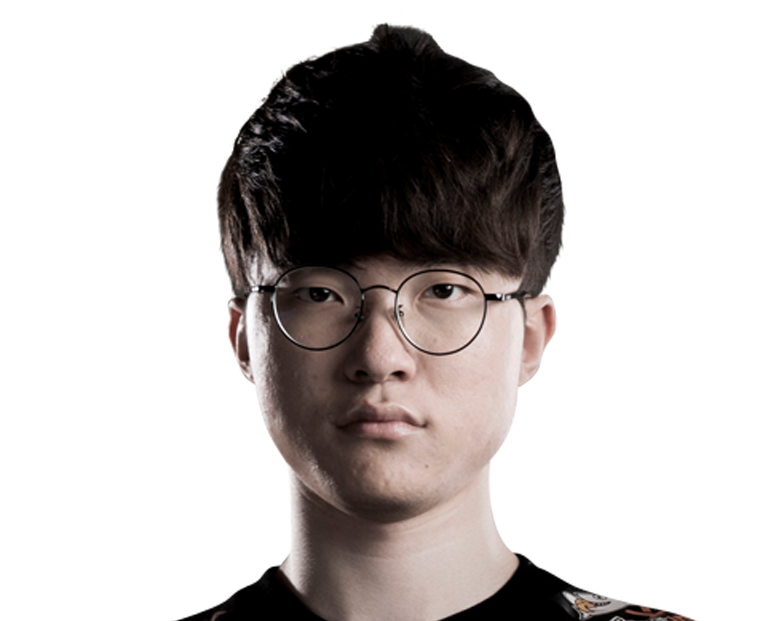
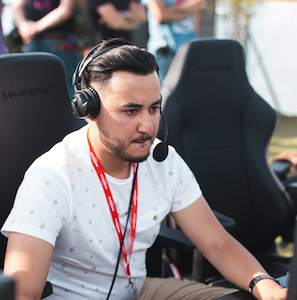
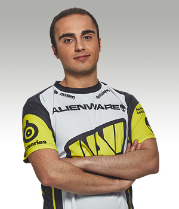

| Faker reçoit le prix du meilleur joueur eSport de l’année
| L’année 2017 se termine et c’est à l’occasion de la prestigieuse Game Award qu’a été décerné le prix du meilleur joueur eSport de l’année. Celui-ci a récompensé l’un des meilleurs, sinon le meilleur joueur de tous les temps de League of Legends : Lee « Faker » Sang-hyeok
À 21 ans seulement, ce joueur coréen domine la scène du MOBA depuis plusieurs années avec sa team SK Telecom T1. Malgré une cuisante défaite en finale de la World Championship face à Samsung (3 :0), on se souvient des titres de 2013, 2015 et de la finale d’anthologie en 2016 avec un troisième match dépassant les 70 minutes.
Il est tout simplement considéré comme le meilleur mid-laner du jeu. Son style est une pure merveille, son timing toujours précis et sa prise de décision impartiale. Aussi appelé le « Deamon King » (Roi démon), Faker est capable de jouer près de 20 champions avec pour la grande majorité un ratio de victoire dépassant les 50%. Lorsqu’il joue Tireur ou Mage, Faker restera à distance mais saura profiter de la moindre opportunité pour attaquer agressivement. Avec les combattants, sa visio du jeu lui permettra de choisir le meilleur moment pour pousser la lane. Enfin avec sa classe préférée, Assassins, Faker prendra la moindre ouverture pour annihiler ses opposants. |
 |
| Corentin “Gotaga” Houssein
| Surnommé The French Monster par la communauté Call of Duty, Gotaga est un joueur incontournable de Call of Duty et membre fondateur de Vitality sur le jeu. Si les performances de son équipe n’ont pas été à la hauteur de sa réputation cette année, Gotaga reste un des joueurs les plus suivis par la communauté CoD. Il totalise plus d’un million cent mille abonnés sur YouTube et est un athlète RedBull. |
 |
| Marie-Laure “Kayane” Norindr
| Kayane a laissé son nom dans le Guinness Book Records en 2012, comme la femme la plus titrée de Versus Fighting (42 podiums). Elle a été l’une des premières ambassadrices du jeu vidéo et de l’eSport. Spécialiste des jeux de combat (Versus Fighting), elle se rend dans la plupart des salons jeux vidéo où chacun peut la défier. Elle organise régulièrement des Kayane session, un rendez-vous pour fédérer la communauté. Kayane est aussi animatrice pour la chaîne Game One. Kayane fait aujourd’hui partie de la Team Red Bull |
|
| Stéphanie “missharvey” Harvey
| Joueuse aguerrie de la scène Counter-Strike, la Québécoise de trente ans est aussi game designer chez Ubisoft Montréal. Elle est actuellement membre de l’équipe américaine CLG Red. Durant sa carrière de joueuse, elle a décroché cinq fois le titre de championne du monde sur le jeu de tir de Valve. Stéphanie participe aussi à nombre d’initiatives pour l’égalité joueur-joueuse et contre la discrimination dans le jeu vidéo, comme le programme AnyKey, soutenu par Intel et l’ESL. |
 |
| Fabien “Neo” Devide
| En 2013, Neo fonde avec Nicolas Maurer l’équipe française Vitality. Lancée sur Call of Duty avec des joueurs emblématiques comme Broken ou Gotaga, elle a depuis étendu son activité à plusieurs jeux, grâce au travail acharné de ses créateurs. En 2016, elle fait, par exemple, une entrée remarquée dans les LCS de League of Legends. Entre Paris, Berlin ou la Corée, où il y a parfois des sessions d’entraînements, Neo essaye toujours d’être présent pour ses joueurs. Il n’est pas rare de le voir derrière son équipe Call of Duty, casque vissé sur la tête, pour l’emmener le plus loin possible. |
 |
| Kuro « KuroKy » Takhasomi (Dota 2)
| Mais au-dessus du MOBA de Riot, celui de Valve. Bien que moins populaire, en particulier en Occident, Dota 2 reste une énorme machine à cashprize. Notamment grâce à The International qui détient toujours le record du plus grand prizepool de l’histoire du jeu vidéo. Et qui est le championnat du monde que le joueur allemand a remporté l’an dernier avec les Team Liquid. Et même les 2,1 millions qu’il a reçu après cette victoire, son solide palmarès avec Na’Vi et Team Secret aurait suffi à en faire le numéro 1 du classement .La démocratisation de l’esport étant tout de même un phénomène plus ou moins récent, il n’est pas étonnant de voir ses gains encore bien loin des plus grandes icônes du sport traditionnel. Il n’empêche que voir une telle évolution en l’espace de quelques années rend optimiste sur l’avenir sur sport électronique. Comme toute carrière sportive, être pro gamer est une voie risquée, et seuls les meilleurs sont capables d’en vivre. |
 |